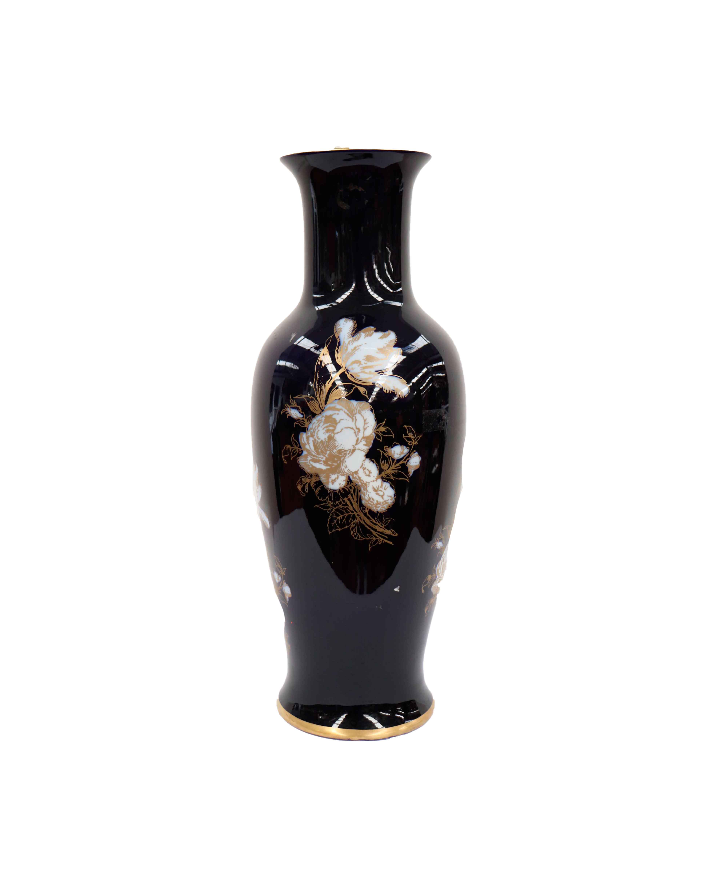
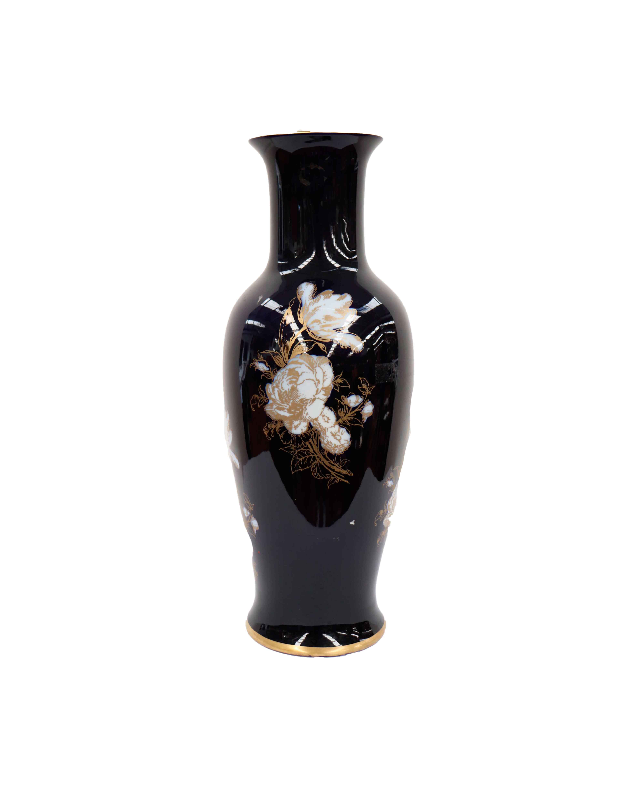

Jarrones de Ceramica Negra
Bienvenidos a la Creacion de Ceramica Negra en Nicaragua Nuestro producto son parte del patrimonio indígena cultural de la región, nuestra Cerámica Negra es totalmente natural, libre de químicas y hecha completamente a mano utilizando las técnicas y los diseños tradicionales que heredamos de nuestros antepasados.
.jpeg)
.jpeg)
.jpeg)
En las herencias Ancestrales precolombinas de nuestros pueblos originarios tenemos la Manufactura de la Cerámica Negra, originalmente es un arte ancestral de Jinotega, pero con la migración de familias, en Matagalpa se encuentran talleres de Cerámica Negra de esta tradición cultural de nuestros pueblos originarios
Materiales
.jpeg)
Proceso
- Sacan barro virgen que se encuentra a varios metros de profundidad
- Se tritura en piedra de moler
- Separan las impurezas con malla hasta dejarla en polvo, ese polvo de arcilla lo mezclan con arena fina de mar para darle consistencia para que no se raje en el horno.
- Así, barro, arena y agua dan paso a la masa que se moldea a mano en piezas esculturales.
- Luego con una brocha o pluma de ave le untan el “tagüe” (engobe, o pasta de arcilla pigmentada de color) rojo o blanco
- Se deja secar por 2 horas, no al sol directamente sino tapada, para conservar algo de humedad.
- Se “bruñen” (pulen) la superficie con una piedra dura de mar, la última pulida se da ya seca para sacarle brillo.
- El horneado dura como ocho horas
- Se sacan después al rojo vivo y las echan en una pila llena de colochos de cedro o de pino; al chocar con lo caliente los colochos cogen fuego manchando con su vapor de resina la superficie de negro azabache.
- Se enfría por dos horas, le untan aceite animal (infundía de cusuco o de gallina), se limpia y se le hacen dibujos con agujas. El color negro lo proporcionan los colochos de madera resinosa.
.jpeg)
.jpeg)
.jpeg)
Precios
En cuanto el valor de las piezas grandes, estos son de mayor consideración los que van desde C$ 60 hasta C$ 280, por el mayor trabajo y material utilizados en su elaboración y mayor riesgo de que se quiebren.
Mas Acerca de la Cerámica Negra
Después de haber sido aparentemente perdido durante siglos, el arte indígena de la Cerámica Negra en Nicaragua se redescubrió en los pueblos tradicionales de Jinotega, donde las mujeres nativas se mantenían fieles a las costumbres de sus antepasados. Hoy en día, las mujeres indígenas son apasionadas de rescatar su patrimonio cultural y mantener viva la Cerámica Negra
.jpeg)
.jpeg) 

Sistema de producción
Por orden de trabajo ya que se generan productos únicos, la mano de obra es exclusivamente humana. No ofrecer un descuento por producción en volumen, como ocurre en los sistemas de producción en masa o de flujo continuo. Un regalo único es un buen ejemplo de producto derivado de un sistema de producción por trabajo. Este producto es artesanal.